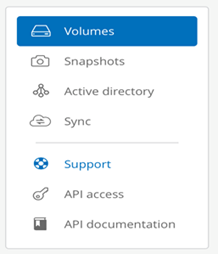
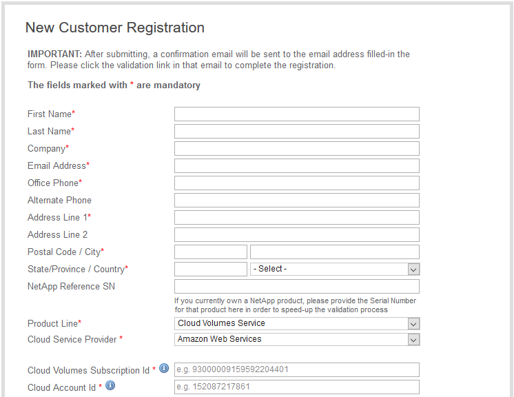

Notas de la versión
Notas de la versión
Activación de derechos de soporte y acceso al soporte
 Sugerir cambios
Sugerir cambios
Una vez que acceda a Cloud Volumes Service poco después de suscribirse a AWS Marketplace, se recomienda encarecidamente que active el derecho de soporte. Al activar la prestación de asistencia técnica, puede acceder al soporte técnico a través del chat en línea, el sistema de tickets web y el teléfono.
El nivel de soporte predeterminado es el autoservicio hasta que se complete la activación y el registro del número de serie.
Activación de los derechos de soporte
Durante el proceso de suscripción inicial con Cloud Volumes Service para AWS, su instancia de Cloud Volumes genera un número de serie de NetApp de 20 dígitos que comienza por "930". El número de serie de NetApp representa la suscripción de Cloud Volumes Service asociada a su cuenta de AWS. Debe registrar el número de serie de NetApp para activar la autorización de asistencia. Ofrecemos 2 opciones de registro de soporte:
-
Cliente actual de NetApp con cuenta SSO existente del sitio de soporte de NetApp (NSS)
-
Nuevo cliente de NetApp sin cuenta SSO existente del sitio de soporte de NetApp (NSS)
Opción 1: Cliente actual de NetApp con cuenta SSO existente del sitio de soporte de NetApp (NSS)
-
Acceda a la URL de Cloud Volumes Service o acceda a este servicio a través del "Portal Cloud Central de NetApp". Después inicie sesión con sus credenciales de Cloud Central de NetApp.
-
Muestre su número de serie de NetApp seleccionando Soporte en la interfaz de usuario (UI) de Cloud Volumes Service.
 -
En la página Soporte, compruebe que el estado de asistencia se muestra
Not registered.
Si no ve el estado de soporte y el número de serie de NetApp, actualice la página del explorador.
-
Haga clic en Activar soporte para registrar el número de serie de NetApp:
-
Si tiene una cuenta de NSS, introduzca sus credenciales de NSS (nombre de usuario y contraseña) en la página Activate Support y haga clic en Activate para activar los derechos de asistencia técnica para su número de serie de NetApp.

-
Si ya es cliente de NetApp, pero no tiene credenciales de SSO de NSS, vaya a la "Sitio de registro de soporte de NetApp" para crear su cuenta primero. A continuación, vuelva aquí para registrarse con sus credenciales de NSS.
-
Si es un cliente nuevo de NetApp, consulte las instrucciones de la opción 2 que aparecen a continuación.
-
Una vez que se activa su número de serie de NetApp, la página Support muestra el estado Registered, que indica que ha activado el derecho de asistencia técnica.

Este es un registro de soporte único para el número de serie de Cloud Volumes Service aplicable. Cualquier suscripción a Cloud Volumes Service nueva y el número de serie nuevo posterior también requiere la activación del soporte. Si tiene alguna pregunta o problema con el registro de soporte, póngase en contacto con nosotros en cvs-support@netapp.com.
Opción 2: Nuevo cliente de NetApp sin cuenta SSO existente del sitio de soporte de NetApp (NSS)
-
Desplácese hasta la "Registro de soporte de servicios de datos en el cloud" Para crear una cuenta de NSS.
-
Seleccione no soy un cliente de NetApp registrado y aparece el formulario de registro de nuevo cliente.
 -
Rellene la información necesaria en el formulario:
-
Introduzca su nombre e información de la empresa.
-
Seleccione Cloud Volumes Service como la línea de productos y Amazon Web Services como proveedor de servicios en la nube.
-
Introduzca su número de serie de NetApp e ID de cliente de AWS desde la página de Cloud Volumes Service Soporte en los siguientes dos campos.
-
Haga clic en Enviar registro.
-
-
Recibirá un correo electrónico de confirmación de su registro enviado. Si no se produce ningún error, se le redirigirá a una página de “Registro enviado correctamente”. También recibirá un mensaje de correo electrónico en un plazo de una hora que le indicará que “su producto es ahora elegible para recibir asistencia”.
-
Como nuevo cliente de NetApp, también debe crear una cuenta de usuario del sitio de soporte de NetApp (NSS) para futuras activaciones de soporte, y para acceder al portal de soporte para chat de soporte técnico y elaboración de tickets web. Vaya a la "Sitio de registro de soporte de NetApp" para realizar esta tarea. Puede proporcionar el número de serie de Cloud Volumes Service recién registrado para acelerar el proceso.
Este es un registro de soporte único para el número de serie de Cloud Volumes Service aplicable. Cualquier suscripción a Cloud Volumes Service nueva y el número de serie nuevo posterior también requiere la activación del soporte. Si tiene alguna pregunta o problema con el registro de soporte, póngase en contacto con nosotros en cvs-support@netapp.com.
Obtención de información de soporte
NetApp ofrece soporte para Cloud Volumes Service de diversas formas. Las amplias opciones de autoservicio gratuitas están disponibles las 24 horas del día, los 7 días de la semana, como los artículos de la base de conocimiento (KB) o la comunidad de NetApp. La suscripción a Cloud Volumes Service adquirida en AWS SaaS Marketplace incluye soporte técnico remoto mediante chat, correo electrónico, emisión de boletos web o teléfono. Primero debe activar el soporte para cada número de serie de NetApp para poder usar estas opciones de soporte no autoservicio. Se necesita una cuenta de SSO del sitio de soporte de NetApp (NSS) para el chat y los efectos de la emisión de boletos web junto con la gestión de casos.
Puede acceder a las opciones de soporte desde la interfaz de usuario de Cloud Volumes Service seleccionando la ficha Soporte en el menú principal. Las opciones de soporte disponibles dependen de si se encuentra en modo de prueba o en modo de suscripción.

Autoasistencia
Estas opciones están disponibles en modo de prueba y están disponibles de forma gratuita las 24 horas del día, los 7 días de la semana:
-
"Base de conocimientos"Al seleccionar los enlaces de esta sección, se accede a la base de conocimientos de NetApp, donde se pueden buscar artículos, instrucciones, preguntas frecuentes o reparaciones relacionadas con Cloud Volumes Service.
-
"Manual de usuario"Si selecciona el enlace haga clic aquí, le llevará al centro de documentación de Cloud Volumes Service para AWS.
-
"Comunidades"Si selecciona el enlace haga clic aquí, le llevará a la comunidad de Cloud Volumes Service, donde podrá conectarse con compañeros y expertos.
-
Correo electrónico al seleccionar el enlace haga clic aquí en la sección Comentarios, se inicia un correo electrónico para recibir asistencia a través de cvs-support@netapp.com. Este es un gran lugar para hacer preguntas generales sobre el servicio, proporcionar comentarios y sugerencias, o buscar asistencia para problemas relacionados con la incorporación.
Soporte de suscripción
Además de las opciones de autosoporte anteriores, si tiene una suscripción de pago de Cloud Volumes Service, puede trabajar con un ingeniero de soporte de NetApp para resolver cualquier problema.
Una vez activado el número de serie de Cloud Volumes Service, puede acceder a los recursos de soporte técnico de NetApp mediante cualquiera de los siguientes métodos. Debe tener una suscripción activa a Cloud Volumes para poder usar estas opciones de soporte.
-
"Chat"De este modo se abrirá también una incidencia de soporte.
-
"Ticket de soporte"Seleccione Cloud Data Services > Cloud Volumes Service AWS
-
"Teléfono"Para informar de nuevos problemas o llamar por incidencias existentes. Este método es el mejor para P1 o asistencia inmediata.
También puede solicitar soporte de ventas haciendo clic en el "Contacte con ventas" enlace.
El número de serie de Cloud Volumes Service puede verse dentro del servicio desde la opción de menú Soporte. Si tiene problemas para acceder al servicio y ha registrado un número de serie con NetApp anteriormente, puede ponerse en contacto con cvs-support@netapp.com para obtener ayuda. También puede ver su lista de números de serie de Cloud Volumes Service en el sitio de soporte de NetApp de la siguiente manera:
-
Inicie sesión en "mysupport.netapp.com".
-
En la ficha de menú Productos > Mis productos, seleccione la familia de productos volumen de nube SaaS para localizar todos sus números de serie registrados: